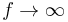
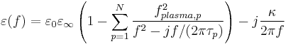
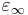
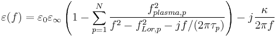
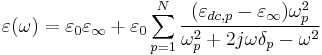
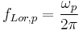
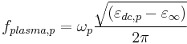
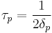
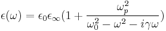
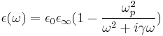

Dispersive Material Property
From openEMS
Note: This page is under construction. If you have experience with openEMS, please consider to create an account and help improve this page.
Contents |
General Usage
CSX = AddLorentzMaterial(CSX, name, varargin)
with the following parameters:
- CSX: The original CSX structure
- name: name of the property
- varargin: a list of variable arguments
To define the material properties use:
CSX = SetMaterialProperty(CSX, name, varargin)
with the following parameters:
- CSX: The original CSX structure
- name: name of this property (same as above!)
- varargin: a list of variable arguments to define the properties:
Conventional material parameters:
- Epsilon: relative electric permittivity for  (must be >=1)
- Mue: relative magnetic permeability for (must be >=1)
- Kappa: electric conductivity (must be >=0)
- Sigma: magnetic conductivity (non-physical property, must be >=0)
See also: Material Property
Drude material parameters:
- EpsilonPlasmaFrequency: electric plasma frequency (fplasma,1, see below)
- MuePlasmaFrequency: magnetic plasma frequency
- EpsilonRelaxTime: electric plasma relaxation time (τp, losses, see below)
- MueRelaxTime: magnetic plasma relaxation time (losses)
Drude higher order parameter (p>1):
- EpsilonPlasmaFrequency_p: p-th order electric plasma frequency (fplasma,p, see below)
- MuePlasmaFrequency_p: p-th order magnetic plasma frequency
- EpsilonRelaxTime_p: p-th order electric plasma relaxation time (losses)
- MueRelaxTime_p: p-th order magnetic plasma relaxation time (losses)
Lorentz material parameters:
Note: Available only for openEMS >= v0.0.31!!
In addition to the drude parameter, the Lorentz-pole frequency can be defined:
- EpsilonLorPoleFrequency: first electric Lorentz pole frequency (fLor,1, see below)
- EpsilonLorPoleFrequency_p: p-th electric Lorentz pole frequency (fLor,p, see below)
- MueLorPoleFrequency: first magnetic Lorentz pole frequency
- MueLorPoleFrequency_p: p-th magnetic Lorentz pole frequency
Drude Material
Physical Model & Parameter

with the parameter:
-  the relative permittivity for
- κ the electric conductivity
- fplasma,p the p-th "plasma" frequency
- τp the p-th relaxation time (damping)
Example
CSX = AddLorentzMaterial(CSX,'drude'); CSX = SetMaterialProperty(CSX,'drude','Epsilon',eps_r,'Kappa',kappa); CSX = SetMaterialProperty(CSX,'drude','EpsilonPlasmaFrequency', 5e9, 'EpsilonRelaxTime', 5e-9);
Lorentz Material
Physical Model & Parameter

with the parameter:
- the relative permittivity for
- κ the electric conductivity
- fplasma,p the p-th drude "plasma" frequency
- fLor,p the p-th Lorentz pole frequency
- τp the p-th relaxation time (damping)
Example
CSX = AddLorentzMaterial(CSX,'lorentz'); CSX = SetMaterialProperty(CSX,'lorentz','Epsilon',eps_r,'Kappa',kappa); CSX = SetMaterialProperty(CSX,'lorentz','EpsilonPlasmaFrequency', 5e9, 'EpsilonLorPoleFrequency', 10e9, 'EpsilonRelaxTime', 5e-9);
Relation to other formulations
- 
Conversion:



κ = 0
Researchers in Physics often adopt a different sign convention, in which they use e − iωt for time-harmonic quantities rather than eiωt in engineering. Therefor in some textbook the Lorentz model is:

And the Drude model is:

Where ωp is the plasma frequency and ω0 is the plasmonic resonant frequency and γ represents the damping effect in material.